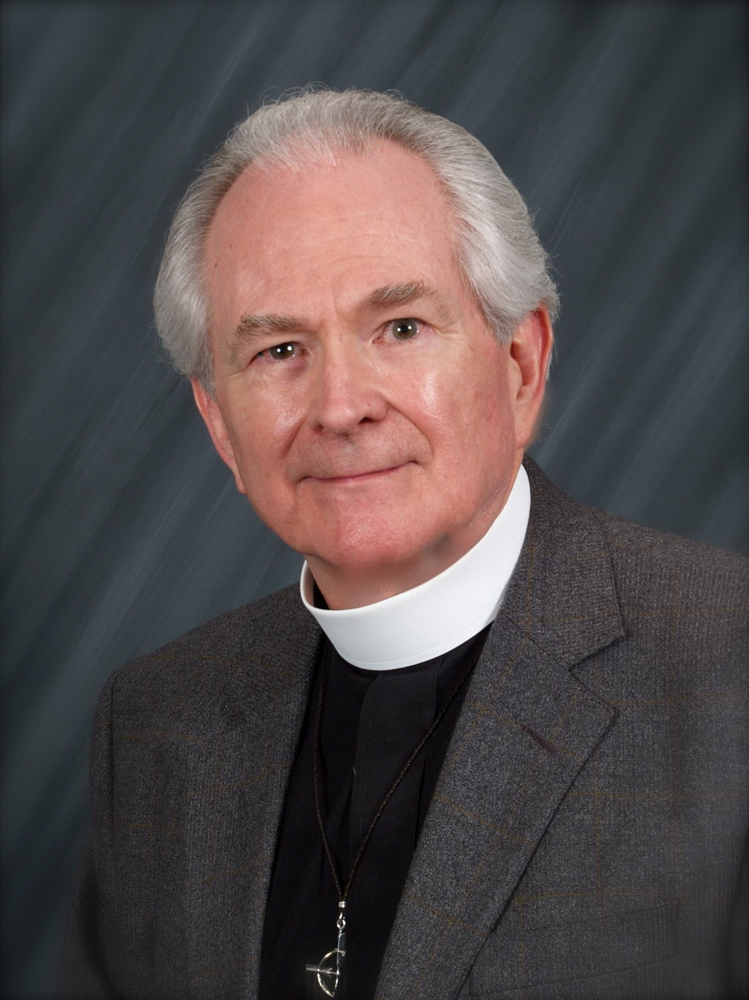

|
|
|
|
|
|
|
|
|
|
|
|
| Short Name: | Carl P. Daw Jr. |
| Full Name: | Daw, Carl P. Jr., 1944- |
| Birth Year: | 1944 |
Carl P. Daw, Jr. (b. Louisville, KY, 1944)

is the son of a Baptist minister. He holds a PhD degree in English (University of Virginia) and taught English from 1970-1979 at the College of William and Mary, Williamsburg, Virginia. As an Episcopal priest (MDiv, 1981, University of the South, Sewanee, Tennesee) he served several congregations in Virginia, Connecticut and Pennsylvania. From 1996-2009 he served as the Executive Director of The Hymn Society in the United States and Canada.
Carl Daw began to write hymns as a consultant member of the Text committee for The Hymnal 1982, and his many texts often appeared first in several small collections, including A Year of Grace: Hymns for the Church Year (1990); To Sing God’s Praise (1992), New Psalms and Hymns and Spiritual Songs (1996), Gathered for Worship (2006). Other publications include A Hymntune Psalter (2 volumes, 1988-1989) and Breaking the Word: Essays on the Liturgical Dimensions of Preaching (1994, for which he served as editor and contributed two essays. In 2002 a collection of 25 of his hymns in Japanese was published by the United Church of Christ in Japan. His current project is preparing a companion volume to Glory to God, the 2013 hymnal of the Presbyterian Church (U.S.A.).
Carl P. Daw Jr.
The Reverend Carl P. Daw, Jr. M.A., M.Div., Ph.D. (born 1944 in Louisville, Kentucky) is an American Episcopal priest. He is curator of hymnological collections and adjunct professor of hymnology at Boston University School of Theology, and was executive director of the Hymn Society in the United States and Canada from 1996 to 2009. In May 2011, he was named a Fellow of the Royal School of Church Music.
Biography[edit]
Son of a Baptist pastor, he moved frequently with his father throughout Tennessee during his youth. He obtained his B.A. at Rice University, his M.A. and Ph. D. from the University of Virginia and taught English at the College of William and Mary for eight years before entering the seminary for his M.Div. at the University of the South. He then served at various parishes throughout the Eastern United States before he began work on hymns. He served on the committee that created the 1982 Episcopal hymnal, and served in a variety of roles related to sacred music before his appointment to the directorship in 1996.
Published works[edit]
- A Year of Grace: Hymns for the Church Year (1990)
- To Sing God's Praise, in (1992)
- New Psalms and Hymns and Spiritual Songs (1996)
- A Hymntune Psalter (1998–1999)
https://en.wikipedia.org/wiki/Carl_P._Daw_Jr.
小卡尔·道（Carl P.Daw Jr.）
牧师 小卡尔·道（Carl P.Daw） 硕士，硕士，博士学位（1944年生于 肯塔基路易斯维尔） 是一个
美国聖公會牧师。他是赞美诗集的策展人和赞美诗学的兼职教授。 波士顿大学神学院并曾担任 美国和加拿大的赞美诗协会
从1996年到2009年。2011年5月，他被任命为 皇家教会音乐学院.
他是浸信会 牧师的儿子 ，青年时期经常和父亲一起，後來搬家 田纳西州。他获得了文学学士学位在 莱斯大学，他的硕士和博士学位来自 弗吉尼亚大学 并在
威廉和玛丽学院。八年后才进入 在 南方大学神学院獲得
M.Div學位。。然后，他开始在赞美诗中工作之前，曾在美国东部的各个教区任职。1982他曾在创建聖詩集委员会。
年聖公會赞美诗委員會1996年任命他為主任，他曾担任过各种与圣乐有关的角色。
恩典的一年：教堂年的赞美诗 (1990)
歌颂上帝的赞美，于（1992年）
新诗篇，赞美诗和精神歌曲 (1996)
赞美诗 (1998–1999)